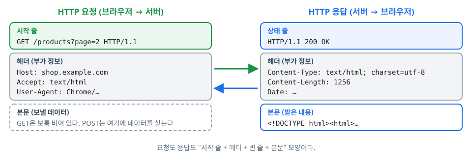

2장. 웹의 동작 원리와 개발 도구
HTTP 요청과 응답 — 상태 코드 맛보기
한 줄 요약
HTTP는 브라우저와 서버가 대화하는 약속입니다. 요청은 "무엇을(메서드) 어디에(경로)", 응답은 "결과가 어떤지(상태 코드)와 내용(본문)"을 담습니다.
1. 요청과 응답의 모양

| 부분 | 요청 | 응답 |
|---|---|---|
| 첫 줄 | 메서드 + 경로 + 버전 GET /index.html HTTP/1.1 |
버전 + 상태 코드 + 설명 HTTP/1.1 200 OK |
| 헤더 | 서버 이름(Host), 받고 싶은 형식(Accept) 등 |
내용 종류(Content-Type), 길이 등 |
| 본문 | 보낼 데이터 (GET은 보통 비어 있음) | HTML, 이미지, JSON 등 실제 내용 |
HTTP는 글자로 된 메시지입니다. 사람이 읽을 수 있으므로, 직접 보내 보고 읽어 볼 수 있습니다.
출처: MDN — HTTP 개요
2. 실제 응답 읽어 보기
브라우저 주소창에 http://example.com을 입력하면, 서버는 아래와 같은 글자 응답을 돌려줍니다. (일부만 옮겼습니다. 헤더의 값과 순서는 때에 따라 다릅니다)
HTTP/1.1 200 OK
Content-Type: text/html
...
<!doctype html>
<html>
<head>
<title>Example Domain</title>
...
| 줄 | 읽는 법 |
|---|---|
HTTP/1.1 200 OK |
HTTP 1.1 규칙으로, 200(성공) 응답 |
Content-Type: text/html |
본문은 HTML 문서다 |
| 빈 줄 | 여기까지 헤더, 아래부터 본문 |
<!doctype html> ... |
브라우저가 화면으로 그릴 HTML 본문 |
브라우저가 하는 일도 이것과 같습니다. 브라우저는 이 글자 응답을 받아 화면으로 그려 줄 뿐입니다. 본문의 <title>Example Domain</title>이 브라우저 탭의 제목으로 보이는 것으로 확인할 수 있습니다.
example.com은 문서 예시용으로 예약된 도메인입니다. 브라우저로 직접 열어 봐도 됩니다. (IANA — Example Domains)
3. 메서드 — 무엇을 하려는가
| 메서드 | 뜻 | 게시판 예 |
|---|---|---|
GET |
가져오기(조회) | 글 목록 보기, 글 하나 보기 |
POST |
새로 만들기 | 글 쓰기 |
PUT |
통째로 바꾸기 | 글 전체 수정 |
PATCH |
일부만 바꾸기 | 제목만 수정 |
DELETE |
지우기 | 글 삭제 |
주소창에 URL을 치거나 링크를 누르면 항상 GET입니다. POST · PUT · DELETE는 폼(3장)이나 JavaScript(7장)로 보냅니다. 10장에서 Spring으로 GET · POST · PUT · DELETE를 만듭니다.
4. 상태 코드 — 결과가 어떤가
상태 코드는 첫 자리 숫자로 크게 나뉩니다.
| 범위 | 뜻 | 한 줄로 |
|---|---|---|
| 1xx | 정보 | 처리 중 (거의 볼 일 없음) |
| 2xx | 성공 | 잘 됐다 |
| 3xx | 리다이렉션 | 다른 곳으로 가라 / 가진 것 그대로 써라 |
| 4xx | 클라이언트 오류 | 요청한 쪽이 잘못했다 |
| 5xx | 서버 오류 | 서버 쪽이 잘못했다 |
자주 보는 코드입니다. 이것만 기억해도 충분합니다.
| 코드 | 이름 | 언제 보나 |
|---|---|---|
200 |
OK | 정상 응답 |
201 |
Created | POST로 새로 만들기 성공 (10장) |
301 · 302 |
Moved | 주소가 옮겨졌으니 새 주소로 가라 |
304 |
Not Modified | 바뀐 게 없으니 브라우저가 가진 것(캐시)을 써라 |
400 |
Bad Request | 요청 형식이 틀렸다 (필수 값 빠짐 등) |
401 |
Unauthorized | 로그인이 필요하다 |
403 |
Forbidden | 로그인은 했지만 권한이 없다 |
404 |
Not Found | 그런 주소(자원)가 없다 |
500 |
Internal Server Error | 서버 코드에서 오류가 났다 |
출처: MDN — HTTP 상태 코드, RFC 9110 15절
4xx면 요청을, 5xx면 서버를 먼저 의심합니다. 앞으로 화면이 안 나오면 상태 코드부터 봅니다. 404면 주소 오타, 500이면 서버 로그를 확인합니다. 이 습관이 디버깅 시간을 가장 많이 줄여 줍니다.
5. HTTP는 기억하지 않는다
HTTP는 요청 하나하나가 독립적입니다. 서버는 기본적으로 "방금 그 사람이 또 왔다"는 것을 기억하지 않습니다. 이것을 무상태(stateless)라고 합니다.
그런데 로그인한 상태는 유지됩니다. 매 요청마다 "나 아까 로그인한 사람"이라는 표시(쿠키나 토큰)를 헤더에 붙여 보내기 때문입니다. 로그인은 18장에서 직접 만듭니다.
6. HTTP와 HTTPS
| 구분 | HTTP | HTTPS |
|---|---|---|
| 내용 | 그대로 전송 | 암호화해서 전송 |
| 기본 포트 | 80 | 443 |
| 주소창 | "주의 요함" 표시 | 자물쇠(또는 설정) 아이콘 |
지금 대부분의 사이트는 HTTPS를 씁니다. 다만 내 PC 안에서 개발할 때(localhost)는 HTTP를 써도 됩니다. 데이터가 내 PC 밖으로 나가지 않기 때문입니다.
핵심 정리
- 요청 = 메서드 + 경로 + 헤더 + (본문), 응답 = 상태 코드 + 헤더 + 본문.
- GET 조회, POST 생성, PUT · PATCH 수정, DELETE 삭제.
- 2xx 성공, 4xx 요청 쪽 문제, 5xx 서버 쪽 문제. 200 · 404 · 500은 꼭 기억한다.
- HTTP는 기억하지 않는다. 로그인 유지는 매 요청에 표시를 붙여 해결한다.